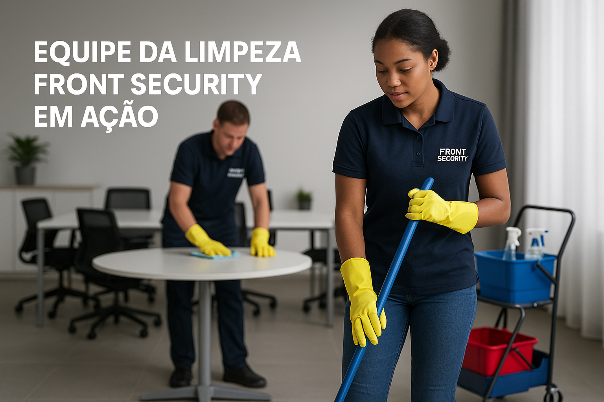
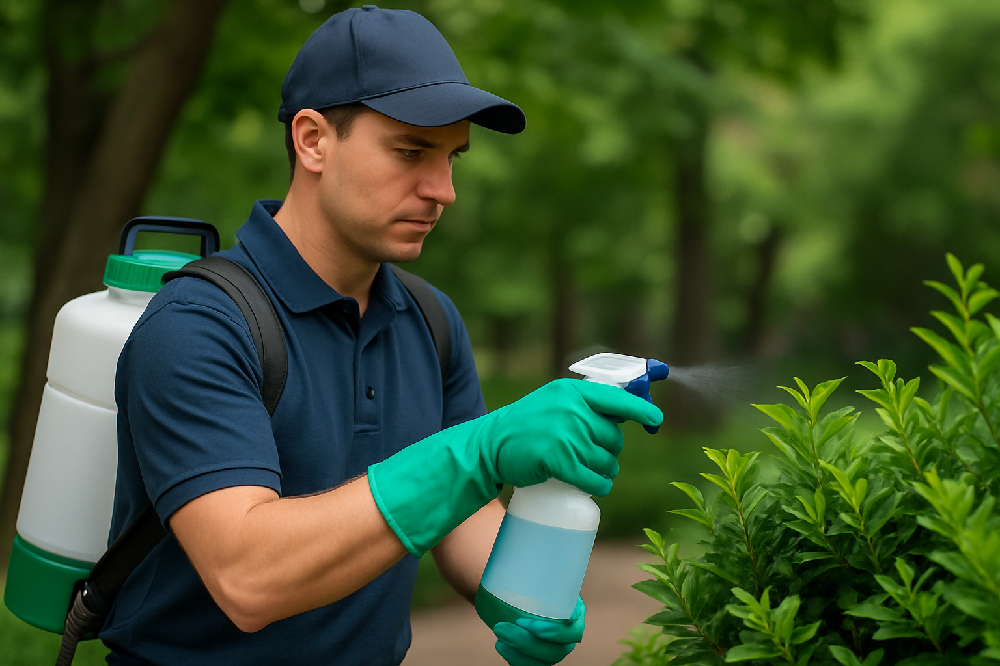

Limpeza e Conservação Profissional
A Front Security também é referência em serviços especializados de limpeza e conservação, oferecendo soluções completas para ambientes corporativos, comerciais, residenciais e industriais.
Áreas Atendidas
- Condomínios residenciais e comerciais
- Empresas de diversos segmentos
- Indústrias e galpões logísticos
- Hospitais, clínicas e laboratórios
- Instituições de ensino e igrejas
- Áreas públicas e eventos
Nossos Diferenciais
- Equipe Treinada e Uniformizada: profissionais capacitados para cada ambiente e necessidade.
- Equipamentos Profissionais: uso de máquinas, EPIs e produtos certificados, ecológicos e seguros.
- Gestão Técnica e Operacional: supervisão contínua e plano de trabalho customizado.
- Controle de Qualidade: checklists e auditorias para garantir excelência em cada etapa.
Serviços Especializados
- Limpeza Pós-Obra
- Conservação de Áreas Verdes
- Limpeza Técnica de Pisos e Fachadas
- Limpeza de Vidros em Altura
- Coleta de Resíduos e Gerenciamento Ambiental
- Higienização de Ambientes Controlados (salas limpas, clínicas, etc.)
Compromisso com Sustentabilidade
Adotamos práticas sustentáveis em todos os nossos processos, buscando reduzir o impacto ambiental com o uso de produtos biodegradáveis, economia de água e gestão correta de resíduos.
Solicite agora seu orçamento
Entre em contato com a nossa equipe comercial e solicite uma proposta personalizada para o seu negócio. Oferecemos atendimento em toda a região, com visitas técnicas para diagnóstico e elaboração do plano ideal para você.
Solicitar Orçamento no WhatsApp